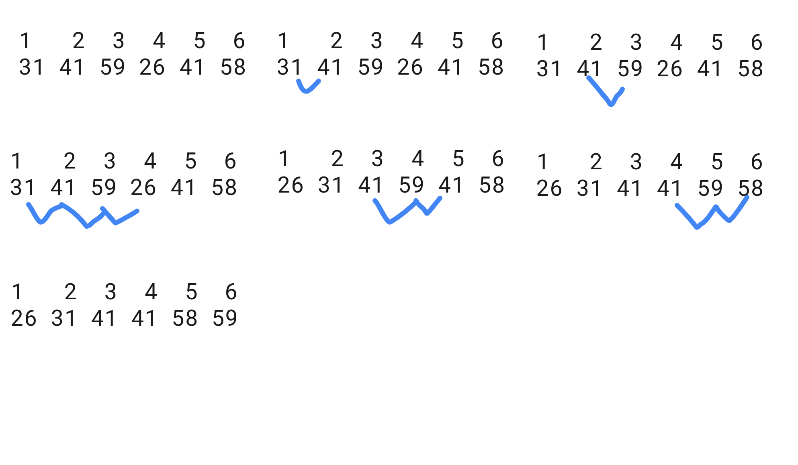

n∈N represents items for the algorithm given. This implies I either use n=ceil(X) or n=floor(X) by a satisfies the problem presented.
log2​(n)=lg(n)Ôªø
fÔªø is faster than gÔªø, if fÔªø is smaller than gÔªø i.e. f<gÔªø
0. The Mechanization of Abstraction and Foundations of Computer Science
Requisites
Epistemology
Logic
Metaphysics
What is science?
Citation: Your ideas vs the canon.
Kind of.
Good sources.
Public domain
üó£Ô∏è
Computer science is no more about computers than astronomy is about telescopes.
— Edsger Dijkstra
Definition of computer science
Issues related to the computer [1]
The discipline of computing —computer science— is the systematic study of algorithmic processes that describe and transform information: their theory, analysis, design, efficiency, implementation, and application. The fundamental question underlying all of computing is, "What can be (efficiently) automated?" [2]
A 1995 U.S. government “blue book” defines it like this: “The systematic study of computing
systems and computation. The body of knowledge resulting from this discipline contains theories for understanding computing systems and methods; design methodology, algorithms, and tools; methods for the testing of concepts; methods of analysis and verification; and knowledge representation and implementation.”
The discipline of computing —computer science— is the systematic study of algorithmic processes that describe and transform a domain of discourse -information-: their theory, analysis, design, delivery, efficiency, implementation, and application. The fundamental question underlying all of computing is, "What can be the true domain of discourse?" Tech and computer science are equal.
Underlying our approach to this subject is our conviction that ``computer science'' is not a science and that its significance has little to do with computers. The computer revolution is a revolution
in the way we think and in the way we express what we think. The essence of this change is the emergence of what might best be called procedural epistemology -- the study of the structure of
knowledge from an imperative point of view, as opposed to the more declarative point of view taken by classical mathematical subjects.
Mathematics provides a framework for dealing precisely with notions of ``what is.'' Computation provides a framework for dealing precisely with notions of ``how to.'' “Structure and Interpretation of Computer Programs,” Mit.edu, 2022. [Online]. Available: https://mitpress.mit.edu/sites/default/files/sicp/full-text/book/book-Z-H-7.html#%_chap_Temp_4. [Accessed: 03-Jan-2022]
function from_decimal_to_base(number, base) {
if (base <= 1) {
return;
}
base_number = ""
q = number
while (q>0)
{
qk = Math.trunc(q/base)
ak = q - base*qk
console.log(`${base * qk + ak}=${base}*${qk}+${ak}`);
base_number = ak.toString(base).toUpperCase()+base_number
q = qk
}
return base_number
}
function from_any_base_to_any_base(number, start_base, end_base) {
console.log(`from base ${start_base} to decimal`);
const start_number = from_base_to_decimal(number, start_base);
console.log(`from decimal to base ${end_base}`);
return from_decimal_to_base(start_number, end_base);
}
How to encode negative numbers in binary number systems?
Gray code
Base −2
8–4–2–1 code is also called BCD (Binary coded Decimal)
Sign and magnitude
Offset binary, also called excess-K or biased representation
Excess-8 (biased)
Zig-zag encoding
Excess-3, 3-excess or 10-excess-3 binary code (often abbreviated as XS-3, 3XS or X3), shifted binary or Stibitz code. https://en.wikipedia.org/wiki/Excess-3
Complements
Ones' complement
Two's complement
Two's complement is the easiest to implement in hardware, which may be the ultimate reason for its widespread popularity. Choo, Hunsoo; Muhammad, K.; Roy, K. (February 2003). "Two's complement computation sharing multiplier and its applications to high performance DFE". IEEE Transactions on Signal Processing. 51 (2): 458–469. doi:10.1109/TSP.2002.806984.
three parts: a sign, a shifter, and a fixed-point number.
0.142 Storing Text
A character is an element of grammar (English, Spanish, ...) + accepted human-computer interface by convention (backspace, delete, escape, @, ...), i.e. a code. code={character∣character∈grammar or character∈human-computer interface}.
For example, English grammar is {A,B,C,...,Z}‚à™{a,b,c,...,z}‚à™{.,;,−,+,!,...,∗}‚à™{0,1,2,3,...,9}Ôªø and human-computer interface in ASCCI is{NUL,SOH,Space,...CAN}Ôªø.
We can represent each character with a bit pattern of n bits (bit pattern length=n). If we have a code={A}, his cardinality ∣code∣=1. Then computer understands computer code=bit patterns ={0} and bit pattern length=1
Mackenzie, Charles E. (1980). Coded Character Sets, History and Development (PDF). The Systems Programming Series (1 ed.). Addison-Wesley Publishing Company, Inc. pp. 6, 66, 211, 215, 217, 220, 223, 228, 236–238, 243–245, 247–253, 423, 425–428, 435–439. ISBN 978-0-201-14460-4. LCCN 77-90165. Archived (PDF) from the original on May 26, 2016. Retrieved August 25, 2019.
std::list<int> v = { 1, 2, 3, 4, 5, 6 };
auto it = v.begin();
while (it != v.end())
{
// remove odd numbers.
if (*it & 1)
{
// `erase()` invalidates the iterator, use returned iterator
it = v.erase(it);
}
// Notice that the iterator is incremented only on the else part (why?)
else {
++it;
}
}
[2] Denning, P. J., Comer, D. E., Gries, D., Mulder, M. C., Tucker, A., Turner, A. J., & Young, P. R. (1989). Computing as a discipline. Communications of the ACM, 32(1), 9–23. doi:10.1145/63238.63239
Algorithm. Sequence of computational steps that transform the input into the output.
input <-> a instance of a problem
...computional steps <-> a computer algorithm <-> transform input to output <-> a program solves a specific problem <-> a task solves an instance of a problem
output
About software
computer algorithm=program=abstract code and program⊆software
Abstracts are important, they define granularity about the algorithm and the elements that achieve it. For example, an algorithm with the English code is not equal to a hardware design. However, the specific precise steps of the elements are given.
Systems, computer systems, and business processes.
Systems, Applications, and Products in Data Processing (SAP).
Complex vs hard
Programming complexity
Correct and incorrect
The algorithm is correct if it can solve the given problem. An incorrect algorithm may halt with a partial or nothing solution. That algorithm could be useful if we control their error rate. However, most time we focused on the correct algorithms.
Notes
Convex hull.
1.2 Algorithms as a technology
Algorithm efficiency is more significant than differences due to hardware. Why should learn about algorithms? applications use them either to solve larger problems than ever before or they rely heavily upon algorithms.
Having a solid base of algorithmic knowledge and technique is one characteristic that separates truly skilled programmers from novices. (35)
Worked examples
1. Give an example of an application that requires algorithmic content at the application level, and discuss the function of the algorithms involved.
Page Rank Algorithm by Google. Search web about Internet.
2. Suppose we are comparing implementations of insertion sort and merge sort on the same machine. For inputs of size n, insertion sort runs in 8n2Ôªø steps, while merge sort runs in 64nlg(n)Ôªø steps. For which values of n does insertion sort beat merge sort?
When is 8n2 faster than 64nlg(n)? That implies ∀n∣8n2<64nlg(n)
3. What is the smallest value of n such that an algorithm whose running time is 100n2Ôªø runs faster than an algorithm whose running time is 2nÔªø on the same machine?
When is 100n2 faster than 2ncontinually? That implies  from n0​to∞, 100n2<2n i.e. sup(n)∣100n2<2n.
Problem 1-1 Comparison of running times
For each function f(n) and time t in the following table, determine the largest size n of a problem that can be solved in time t, assuming that the algorithm to solve the problem takes f(n) microseconds.
Framework Thinking about the design and analysis of algorithms (Getting started)
Sum of sequence
Input: A non-null sequence of nÔªø real numbers [a1​,a2​,a3​,...,an​]Ôªø.
Output: A real value rÔªø, such that r=‚àëin​ai‚ÄãÔªø
SUM(A)
n = A.length c1(1)
r = A[n] c2(1)
for j = n-1 downto 1 c3(n)
do r = r + A[j] c4(n-1)
return r c5(1)
Invariant loop. At the start of each iteration of for loop of lines 3-4, rÔªø is equal to elements from nÔªø to last values n−jÔªø.
Initialization.
Before the first loop iteration, j=n−1Ôªø and r=an‚ÄãÔªø, therefore rÔªø equals the last value, n−(n−1)=1Ôªø. Which checks with the invariant loop.
Maintenance.
Before the loop iteration, j=kÔªø, thus r=an​+an−1​+an−2​+...+an−k‚ÄãÔªø (the summation of last elements). At line 4Ôªøj=k+1Ôªø element is added to rÔªø, i.e. the next loop iteration r=an​+an−1​+an−2​+...+an−k​+an−(k+1)‚ÄãÔªø. Which checks with the invariant loop.
Termination.
When loop terminates j=nÔªø, n−j=n−n=0Ôªø. By invariant loop We have r=an​+an−1​+an−2​+...+an−k​+an−(k+1)​+...+a1‚ÄãÔªø.
Hence, the algorithm is correct.
We sum the product of the costs times columns T(n)=c1​+c2​+c3​n+c4​(n−1)+c5​n=(c4​+c5​)n+(c1​+c2​+c3‚Äã‚àíc4​)Ôªø.
Sorting problem by insertion sort
Input: A sequence (or array) of nÔªø numbers [a1​,a2​,...,an​]Ôªø. The numbers that we wish to sort are also known as the keys.
INSERTION_SORT(numberSequence)
for j = 2 to numberSequence.length
key = numberSequence[j]
i = j - 1
while i > 0 and numberSequence[i] > key
numberSequence[i+1] = numberSequence[i]
i = i - 1
numberSequence[i+1] = key
def insertion_sort(numberSequence, compareFunction):
for j in range(1,len(numberSequence)):
key = numberSequence[j]
i = j - 1
while i >= 0 and compareFunction(numberSequence[i], key):
numberSequence[i+1] = numberSequence[i]
i = i - 1
numberSequence[i+1] = key
return numberSequence;
insertion_sort([4,3,2,1], lambda a,b : a > b)
void insertionSort ( int numberSequence[ ] , int length)
{
for( int j = 1 ; i < length ; i++ ) {
int key = numberSequence[ i ];
int i = j - 1;
while( i >= 0 && numberSequence[i] > key) {
numberSequence[i+1] = numberSequence[i];
i = i - 1;
}
numberSequence[ i+1 ] = key;
}
}
Output: A reordering [a1′​,a2′​,...,an′​] of the input sequence such that a1′​≤a2′​≤...≤an′​.
Preconditions and postconditions
This is a topic in software engineering. Here We assume correct preconditions.
Using Figure 2.2 as a model, illustrate the operation of INSERTION-SORT on the
array A=[31,41,59,26,41,58]Ôªø
Rewrite the INSERTION-SORT procedure to sort into nonincreasing instead of nondecreasing order.
insertion_sort([1,2,3,4], lambda a,b : a < b)
Consider the searching problem:
Input: A sequence of n numbers A D ha1; a2;:::;ani and a value .
Output: An index i such that D AŒi or the special value NIL if does not
appear in A.
Write pseudocode for linear search, which scans through the sequence, looking
for . Using a loop invariant, prove that your algorithm is correct. Make sure that
your loop invariant fulfills the three necessary properties.
Round half to even, a variant of the round-to-nearest method.
This method is called the round-to-even method. Other names include the round-half-to-even method, the round-ties-to-even method, and "bankers' rounding." This variant of the round-to-nearest method is also called convergent rounding, statistician's rounding, Dutch rounding, Gaussian rounding, odd–even rounding, or bankers' rounding.
Banker's rounding: the value is rounded to the nearest even number. Also known as "Gaussian rounding", and, in German, "mathematische Rundung".
Standard rounding: the value is rounded to the nearest number (be it odd or even). In German it is known as "kaufmännische Rundung".
function roundIt(n, d = 0) {
var m = Math.pow(10, d);
var n = +(d ? n * m : n).toFixed(8);
var i = Math.floor(n),
diff = n - i; // getting the difference
var e = 1e-8; // Rounding errors in var(diff)
// Checking if the difference is less than or
// greater than, based on that adding the 1 to it.
var r = (diff > 0.5 - e && diff < 0.5 + e) ?
((i % 2 == 0) ? i : i + 1) : Math.round(n);
return d ? r / m : r; // if d != 0 then returning r/m else r
}
import time
import numpy as np
def timer(f):
x=np.random.rand(1,100000)[0]
times = []
for i in range(10):
tic = time.perf_counter()
f(x)
toc = time.perf_counter()
times.append(toc - tic)
print(f"Build finished in {np.mean(times):0.4f} +- {np.std(times):0.4f} seconds")
Data structures
Chapter 16 Greedy Algorithms
Worked examples
16-1 Coin changing
Consider the problem of making change for n cents using the fewest number of coins. Assume that each coin’s value is an integer.
a. Describe a greedy algorithm to make change consisting of quarters, dimes, nickels, and pennies —25, 10, 5 y 1 respectively. Prove that your algorithm yields an optimal solution.
Input. n∈NÔªøcents.
Output. The fewest sequence of quarters, dimes, nickels, and pennies, such that their sum equals to nÔªø.
b. Suppose that the available coins are in the denominations that are powers of c, i.e., the denominations are c0,c1,...,ckÔªø for some integers c>1 and k‚â•1Ôªø.
Show that the greedy algorithm always yields an optimal solution.
c. Give a set of coin denominations for which the greedy algorithm does not yield an optimal solution. Your set should include a penny so that there is a solution for every value of n.
d. Give an O(nk)Ôªø-time algorithm that makes change for any set of k different coin denominations, assuming that one of the coins is a penny
Given a signed 32-bit integer x, return x with its digits reversed. If reversing x causes the value to go outside the signed 32-bit integer range [-231, 231 - 1], then return 0.


{kind=link}


 https://jsfiddle.net/2hs9nqbk/2/
https://jsfiddle.net/2hs9nqbk/2/https://colab.research.google.com/drive/1QdQAHotL6waCUzuMMEWjbxFCD-WcdT2V#scrollTo=EOhWJY3Jrds1&line=7&uniqifier=1